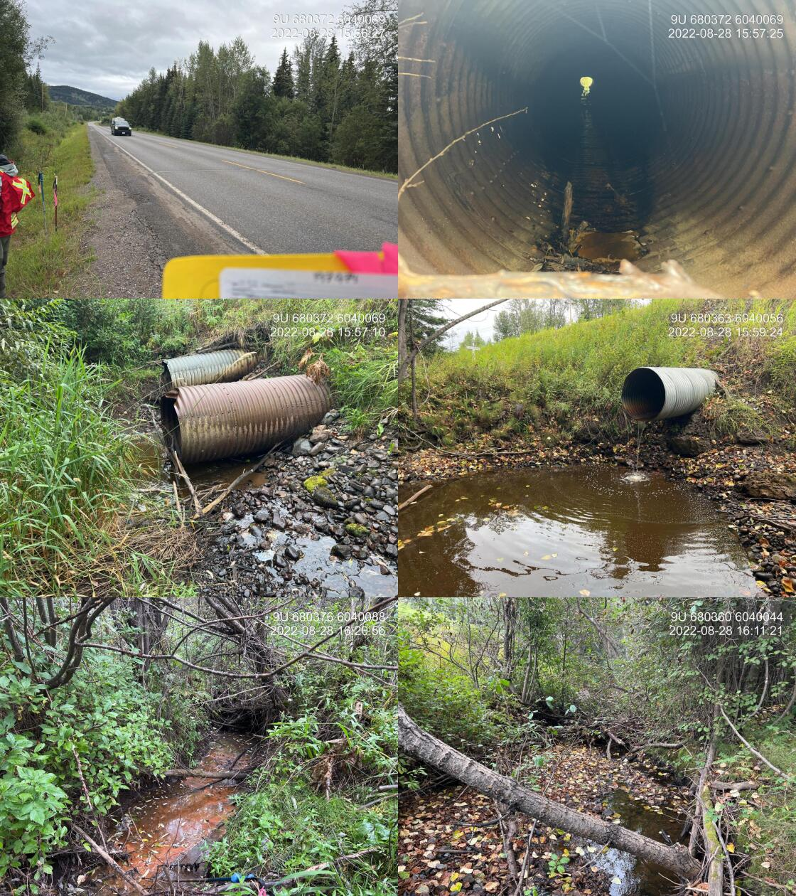

Watson Creek - 197974 - Appendix
Site Location
PSCIS crossing 197974 is located under Highway 16 on Watson Creek, approximately 7km southeast of Topley, BC. The highway is 0.4km upstream from the confluence with the Ailport Creek and the crossing is the responsibility of the Ministry of Transportation and Infrastructure.
Background
At crossing 197974, Watson Creek is a third order stream with a watershed area upstream of the crossing of approximately 17.9km2. The elevation of the watershed ranges from a maximum of 1415m to 771m near the crossing (Table 5.13). Upstream of the highway coho salmon and rainbow trout have previously been recorded with the coho observation date documented as September 2000 (MoE 2020b; Norris 2020). PSCIS crossing 198065 is located ~2.5km upstream of the highway on Montgomery Road, was assessed in 2021 and was ranked as a barrier to fish passage according to the provincial protocol. Farther upstream, there are two addition sites where GIS modelling indicates road stream crossings may be present (modelled crossing IDs 1801123 and 1801115). Watson Creek flows through Buckrow Angus farm immediately upstream of the highway then into Ailport Creek approximately 350m downstream. Stream crossing structures within Ailport Creek upstream of the confluence with Watson Creek were assessed in 2021 with results presented in Irvine (2022).
fpr::fpr_table_wshd_sum(site_id = my_site) %>%
fpr::fpr_kable(caption_text = paste0('Summary of derived upstream watershed statistics for PSCIS crossing ', my_site, '.'),
footnote_text = 'Elev P60 = Elevation at which 60% of the watershed area is above',
scroll = F)| Site | Area Km | Elev Site | Elev Min | Elev Max | Elev Median | Elev P60 | Aspect |
|---|---|---|---|---|---|---|---|
| 197974 | 17.9 | 731 | 771 | 1415 | 950 | 922 | SSW |
| * Elev P60 = Elevation at which 60% of the watershed area is above |
PSCIS stream crossing 197974 was ranked as a high
priority for follow up by the Canadian Wildlife Federation and
Irvine (2021) due to significant quantities of habitat
upstream modelled by bcfishpass as likely suitable for salmon rearing.
A summary of habitat modelling outputs is presented in Table
5.14 and a map of the watershed is
provided in map attachment
093L.115.
| Habitat | Potential | Remediation Gain | Remediation Gain (%) |
|---|---|---|---|
| ST Network (km) | 21.2 | 2.5 | 12 |
| ST Lake Reservoir (ha) | 0.0 | 0.0 | – |
| ST Wetland (ha) | 3.7 | 0.0 | 0 |
| ST Slopeclass03 Waterbodies (km) | 0.3 | 0.0 | 0 |
| ST Slopeclass03 (km) | 2.1 | 0.5 | 24 |
| ST Slopeclass05 (km) | 10.7 | 1.5 | 14 |
| ST Slopeclass08 (km) | 6.9 | 0.5 | 7 |
| ST Spawning (km) | 0.0 | 0.0 | – |
| ST Rearing (km) | 13.9 | 2.0 | 14 |
| CH Spawning (km) | 0.0 | 0.0 | – |
| CH Rearing (km) | 0.0 | 0.0 | – |
| CO Spawning (km) | 0.0 | 0.0 | – |
| CO Rearing (km) | 11.4 | 2.0 | 18 |
| CO Rearing (ha) | 3.7 | 0.0 | 0 |
| SK Spawning (km) | 0.0 | 0.0 | – |
| SK Rearing (km) | 0.0 | 0.0 | – |
| SK Rearing (ha) | – | 0.0 | – |
| All Spawning (km) | 16.1 | 2.0 | 12 |
| All Rearing (km) | 14.2 | 2.0 | 14 |
| All Spawning Rearing (km) | 16.6 | 2.0 | 12 |
| * Model data is preliminary and subject to adjustments. |
Stream Characteristics at Crossing
At the time of the survey, PSCIS crossing 197974 was un-embedded, non-backwatered and ranked as a barrier to upstream fish passage according to the provincial protocol (MoE 2011b) (Table 5.15). The culvert was considered a complete barrier to all species and all life stages at all flows due to an outlet drop measured at 1m high. The deep and large outlet pool indicated that the culvert was significantly undersized. Condition of the pipe was noted as poor with extensive corrosion present and some collapsing in the middle of the pipe. Water temperature was 13\(^\circ\)C, pH was 7.8 and conductivity was 199uS/cm.
| Location and Stream Data |
|
Crossing Characteristics | – |
|---|---|---|---|
| Date | 2022-08-28 | Crossing Sub Type | Round Culvert |
| PSCIS ID | 197974 | Diameter (m) | 0.9 |
| External ID | – | Length (m) | 26 |
| Crew | MW, AI | Embedded | No |
| UTM Zone | 9 | Depth Embedded (m) | – |
| Easting | 680379 | Resemble Channel | No |
| Northing | 6040073 | Backwatered | No |
| Stream | Watson Creek | Percent Backwatered | – |
| Road | Highway 16 | Fill Depth (m) | 3 |
| Road Tenure | MoTi | Outlet Drop (m) | 1 |
| Channel Width (m) | 3.4 | Outlet Pool Depth (m) | 1.2 |
| Stream Slope (%) | 2 | Inlet Drop | No |
| Beaver Activity | No | Slope (%) | 3.5 |
| Habitat Value | Medium | Valley Fill | Deep Fill |
| Final score | 39 | Barrier Result | Barrier |
| Fix type | Replace with New Open Bottom Structure | Fix Span / Diameter | 10 |
| Photos: From top left clockwise: Road/Site Card, Barrel, Outlet, Downstream, Upstream, Inlet. | |||
| Comments: Deep and large outlet pool indicate culvert is significantly undersized. Condition of the pipe is poor with corrosion and some collapsing in the middle of the pipe. 0.6m diameter overflow pipe located adjacent to the main culvert. Some decent gravels downstream. 15:52 |
Stream Characteristics Downstream
The stream was surveyed downstream from crossing 197974 for 350m to the confluence with Ailport Creek (Figures 5.13 - 5.14). The average channel width was 3.5m, the average wetted width was 1.4m, and the average gradient was 2.2%.The dominant substrate was gravels with cobbles sub-dominant.Total cover amount was rated as trace with small woody debris dominant. Cover was also present as undercut banks and deep pools. Immediately downstream of the culvert stream flows were noted as very minimal however, at approximately 50m downstream the volume of water increased substantially. There were occasional deep pools and undercut banks but cover and complexity was notably lacking in most areas. At approximately 100m downstream of the highway riparian forests have been removed to accommodate pasture with notably less cover present and a channel confined by steep banks. Abundant gravels suitable for resident and anadromous salmonid spawning were present throughout the area surveyed. The habitat was rated as medium value for salmonid rearing and spawning.
Stream Characteristics Upstream
The stream was surveyed upstream from crossing 197974 for 600m (Figures 5.15 - 5.18). The dominant substrate was gravels with fines sub-dominant.The average channel width was 3.4m, the average wetted width was 1.8m, and the average gradient was 1.8%.Total cover amount was rated as moderate with undercut banks dominant. Cover was also present as small woody debris, large woody debris, deep pools, and overhanging vegetation. Numerous salmonid fry were noted throughout the area surveyed along with abundant gravels suitable for resident and anadromous salmonid spawning. Immediately upstream of the crossing for approximately 150-200m stream banks and riparian areas were heavily impacted by cattle with beaver activity also noted in this area. Some pools to 0.7m deep were present and suitable for salmonid juvenile rearing and overwintering. Survey notes indicate that at the time of the survey cattle appeared to be accessing the stream intermittently throughout the entire area surveyed. Overall, the habitat surveyed upstream of the crossing rated as medium value as an important migration corridor containing habitat suitable for rainbow and coho spawning with moderate rearing potential for juvenile salmonids.
Structure Remediation and Cost Estimate
Should restoration/maintenance activities proceed, replacement of PSCIS crossing 197974 with a bridge (10m span) is recommended. The cost of the work is estimated at $1,500,000 for a cost benefit of 1.6 linear m/$1000 and 2.8 m2/$1000.
Conclusion
Modelling indicates 13.9km of habitat upstream of crossing 197974 suitable for steelhead rearing with areas surveyed rated as medium value for rearing and spawning. Crossing 197974 was ranked as a moderate priority for proceeding to design for replacement. Capture of coho upstream of the highway in 2000 is an indication that the watershed has provided habitat for anadromous species in the past. Although the culvert under the highway appears to be a complete barrier to all species and life stages of fish at all flows, fish sampling in this area would help confirm that anadromous fish are no longer able to ascend the culvert. This seems likely so it would be necessary to replace the highway crossing for anadromous fish to populate the watershed upstream. Subsequently the highway crossing should be replaced first, before pursueing remedial works at the culvert located 2.5km upstream on Montgomery Road.
tab_hab_summary %>%
filter(Site == my_site) %>%
# select(-Site) %>%
fpr::fpr_kable(caption_text = paste0('Summary of habitat details for PSCIS crossing ', my_site, '.'),
scroll = F) | Site | Location | Length Surveyed (m) | Channel Width (m) | Wetted Width (m) | Pool Depth (m) | Gradient (%) | Total Cover | Habitat Value |
|---|---|---|---|---|---|---|---|---|
| 197974 | Downstream | 350 | 3.5 | 1.4 | 0.4 | 2.2 | trace | medium |
| 197974 | Upstream | 600 | 3.4 | 1.8 | 0.5 | 1.8 | moderate | medium |
my_photo1 = fpr::fpr_photo_pull_by_str(str_to_pull = '_d1_')
my_caption1 = paste0('Typical habitat downstream of PSCIS crossing ', my_site, '.')Figure 5.13: Typical habitat downstream of PSCIS crossing 197974.
my_photo2 = fpr::fpr_photo_pull_by_str(str_to_pull = '_d2_')
my_caption2 = paste0('Typical habitat downstream of PSCIS crossing ', my_site, '.')Figure 5.14: Typical habitat downstream of PSCIS crossing 197974.
my_caption <- paste0('Left: ', my_caption1, ' Right: ', my_caption2)
knitr::include_graphics(my_photo1)
knitr::include_graphics("fig/pixel.png")
knitr::include_graphics(my_photo2)my_photo1 = fpr::fpr_photo_pull_by_str(str_to_pull = '_u1_')
my_caption1 = paste0('Typical habitat upstream of PSCIS crossing ', my_site, '.')Figure 5.15: Typical habitat upstream of PSCIS crossing 197974.
my_photo2 = fpr::fpr_photo_pull_by_str(str_to_pull = '_u2_')
my_caption2 = paste0('Typical habitat upstream of PSCIS crossing ', my_site, '.')Figure 5.16: Typical habitat upstream of PSCIS crossing 197974.
my_caption <- paste0('Left: ', my_caption1, ' Right: ', my_caption2)
knitr::include_graphics(my_photo1)
knitr::include_graphics("fig/pixel.png")
knitr::include_graphics(my_photo2)my_photo1 = fpr::fpr_photo_pull_by_str(str_to_pull = '_u3_')
my_caption1 = paste0('Typical habitat upstream of PSCIS crossing ', my_site, '.')Figure 5.17: Typical habitat upstream of PSCIS crossing 197974.
my_photo2 = fpr::fpr_photo_pull_by_str(str_to_pull = '_u4_')
my_caption2 = paste0('Typical habitat upstream of PSCIS crossing ', my_site, '.')Figure 5.18: Typical habitat upstream of PSCIS crossing 197974.
my_caption <- paste0('Left: ', my_caption1, ' Right: ', my_caption2)
knitr::include_graphics(my_photo1)
knitr::include_graphics("fig/pixel.png")
knitr::include_graphics(my_photo2)